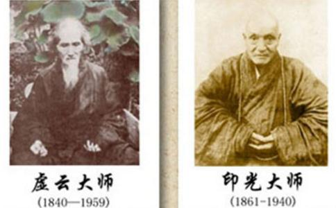

参考各方资料，
关于二位高僧的相逢，印光大师在其文钞中未曾述及。而虚云和尚在《壬辰一九五二年十二月廿一日讲于印光大师生西十二周年纪念》中云：“回忆我第一次与印光老法师相见，是光绪廿年在普陀山，那时是化闻和尚请他在前寺讲《阿弥陀经》。”又在《印光大师画传序》中云：“清光绪二十年，余在普陀山。法雨寺化闻和尚，敦请印光大师讲经，得与识面。”
据虚云和尚的回忆，似乎是在光绪二十年与印光大师相识，并且是在普陀山前寺之普济寺讲经。但又据《虚云年谱》云：“光绪二十年甲午五十五岁，仍在翠峰茅蓬研究经教。”
又云：“光绪二十一年乙未五十六岁，扬州高旻寺住持月朗到九华。称今年高旻有朱施主
居数日，迳赴高旻。知事僧见容瘁，问：‘有病否。’
曰：‘无。’
乃谒月朗和尚，询山中事后，即请代职。予不允。又不言堕水事，只求在堂中打七。高旻家风严峻，如请职事拒不就者，视为慢众。于是表堂，打香板，予顺受不语。而病益加剧，血流不止，且小便滴精，以死为待。在禅堂中昼夜精勤，澄清一念，不知身是何物。
经二十余日，众病顿愈。旋采石矶住持德岸送衣物来供，见容光焕发，大欣慰。乃举予堕水事告众，皆钦叹。禅堂内职不令予轮值，得便
一夕，夜放晚香时，开目一看，忽见大光明如同白昼，内外洞澈，隔垣见香灯师小解，又见西单师在圊中，远及河中行船，两岸树木种种色色，悉皆了见，是时才鸣三板耳！
翌日，询问香灯及西单，果然。予知是境，不以为异。
至腊月八七第三晚，六枝香开静时，护七例冲开水，溅予手上，茶杯堕地，一声破碎，顿断疑根，庆快平生，如从梦醒。自念
‘杯子扑落地，响声明沥沥；
又偈：
‘烫著手、打碎杯，家破人亡语难开；春到花香处处秀，山河大地是如来。’”
又云：“光绪二十二年丙申五十七岁夏，至镇江金山寺过戒期，大定老和尚留住过冬。光绪二十三年丁酉五十八岁，由金山往朝狼山，礼
以如上明文可证明，虚老之“光绪二十年”，盖老人记忆之误耳！原以光绪二十年时，虚老仍在九华翠峰茅蓬研习经教。直到光绪二十三年，虚老才至宁波阿育王寺
虚老之《礼
虚云和尚至普陀山之事，有诗为证。如《普陀山奇峰宿雨二首》云：峭壁奇峰一抹烟，淡云微雨浸遥天；隔林石涧添幽咽，似答山僧不二禅。西风飒飒雨蒙蒙，室冷禅枯意自同；蓦地一声来枕畔。闲情吹落万山中。又如《普陀佛顶山》云：倚杖闲看落日斜，回光万道斗奇花；天孙应是无聊赖，织就云章衬晚霞。春花秋月不关情，夕照翻疑梦里惊；赤白青黄描写尽。天孙纵巧织难成。
虚老离普陀隔年后，又作《寄普陀法雨经楼印光法师》诗云：“愧无健笔写青天，底事由来记不全；况值秋风惊晚树，料应寒月伴枯禅。挑灯夜拥生公榻。对座时谈寂子篇；遥忆普陀经隔岁，黄花开遍宝楼前。”
总之，虚老与印光相识之时，是虚老在高旻禅堂悟后的事了。亦是印老六载
关于二老曾经的一次晤面法缘，印老在其《文钞》中只字未提，而虚老却对印老留下了纪念文字。今附虚老对印老的纪念文章如下，飨来人。
《壬辰一九五二年十二月廿一日讲于印光大师生西十二周年纪念》文：
今天是印光老法师生西十二周年纪念，各位都是他的
回忆我第一次与印光老法师相见，是光绪廿年在普陀山。那时，是化闻和尚请他在前寺讲《阿弥陀经》。自从讲完了经，他便在寺中阅藏。二十余年，从未离开一步，只是闭户潜修，所以他对教义极深。他虽深通教义，却以一句“阿弥陀佛”为日常行持，绝不觉得自己深通经教，便轻视
佛所
各位是印光老法师的弟子，今天纪念他，便是纪念他的真实行持。他脚踏实地的真修，实足追踪古德。他体解《大势至
因此，我劝大众，要坚信
《印光大师画传序》文：
“清光绪二十年，余在普陀山。法雨寺化闻和尚，敦请印光大师讲经，得与识面。讲经事竣，大师即在寺阅藏，历二十余年，日对一编，足不出户限，故诸经之奥，靡不贯通。日常行持，抱定一句南无阿弥陀佛，盖因深通教义故益重视念佛法门。
佛所说法，无一法不是疗治众生之病苦，念佛法门，名为阿伽陀药，总治一切病，但能信心坚固，愿行深切，决定得到圆满利益。如大师之真实行持，脚踏实地，禅讲兼通，而归宗于净土，昌明大法，密护诸宗，常以诸恶莫作，众善奉行，敦伦尽分，闲邪存诚，深信因果，老实念佛等语教人，不标新，不玄奇，所谓道在平常日用间，其一生之功行事迹，及本身成就，昭昭在人耳目，不待余之饶舌也。
兹者，其弟子灵岩妙真和尚，及了然、德森、廉音、如岑诸法师，周孟由、吴谷宜、费范九、袁伯庸、窦存我、游有维众
盖凡心陋劣，未能触途成观，
大师弟子遍寰宇，多服膺其教言，而未亲其道范，今有此画传流通，使天下后世，永得瞻仰，如同亲炙，则大师之遗教，亦永垂不朽矣！惟愿诸仁者，由影得心，由心得道，闻画说法，共证真常，同生净土焉！
时在癸巳十月虚云谨序。”
虚老的字里行间，流露出了对印老的仰慕与赞叹，可见其生平仅有的一次晤面法缘，给彼此都留下了深刻的印象。彼此虽则各立门庭，实乃璧联珠合，共同